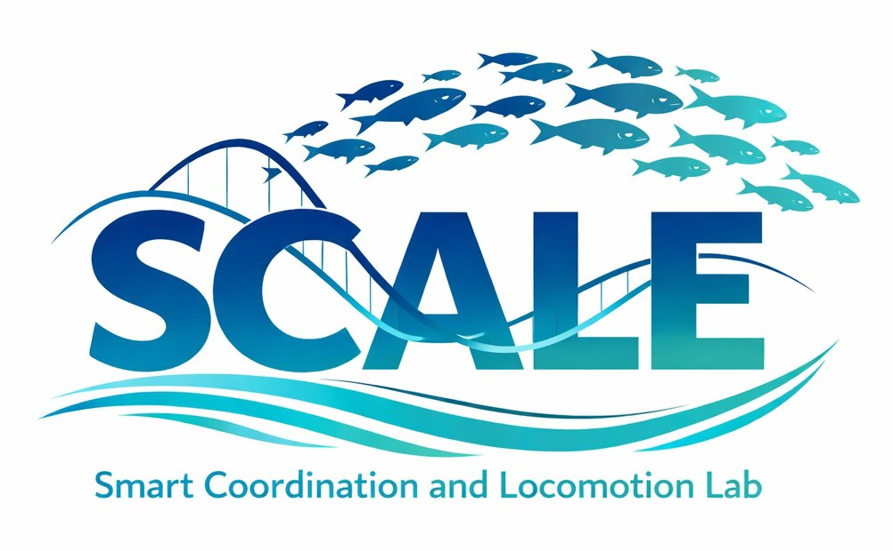

Smart Coordination and Locomotion Laboratory
We combine physics-based models with data-driven approaches to analyze and control bio-inspired dynamical systems — from fish schooling to sea stars.
Department of Mechanical Engineering — California State University, Northridge
Research Focus
-
Bio-inspired Locomotion
Studying how biological organisms interact with the physical world to move efficiently.
-
AI-Powered Swimmers
Using Reinforcement Learning to train optimal locomotion controllers for bio-inspired robotic swimmers.
-
Decentralized Multi-Agent Control
Mathematical models for decentralized biological systems — fish schools and sea stars — to design distributed robotic systems.
-
Fluid-Structure Interaction
Efficient physics-based models to study how fish interact with and exploit their fluid environments.
Recent News
| Feb 2026 | Sara presented a poster at CSUNposium 2026 — way to go, Sara! |
| Jan 2026 | Our paper "Tube Feet Dynamics Drive Adaptation in Sea Star Locomotion" published in PNAS and featured in Nature Physics. |
| Nov 2025 | Victor presented his research at APS DFD 2025 in Houston, Texas — way to go, Victor! |
| Oct 2025 | Dr. Heydari gave an invited talk at the UC Davis Mathematical Biology Seminar. |
| Aug 2025 | Dr. Heydari joined CSUN as Assistant Professor in the Mechanical Engineering Department. |